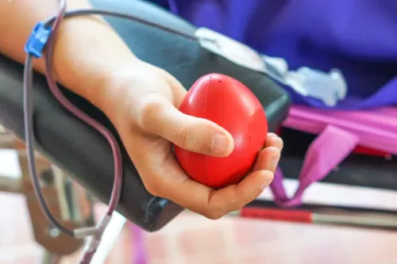

Blood Donation Facts
Learn why your donation matters.

Did You Know?
One donation can save up to three lives.
A single unit of donated blood can be separated into three components: red blood cells, plasma, and platelets. Each of these can be given to different patients for various medical needs.

A Word of Thanks
"The blood you donate is a lifeline in an emergency and for people who need long-term treatments. We are all connected by blood."

Urgent Need
Someone needs blood every two seconds.
From accident victims to patients undergoing surgery and those with chronic illnesses like cancer or sickle cell disease, the demand for blood is constant and universal.

Community Spirit
"Donating blood is a simple act of kindness that has a profound and lasting impact. It's one of the most direct ways to help someone in need."